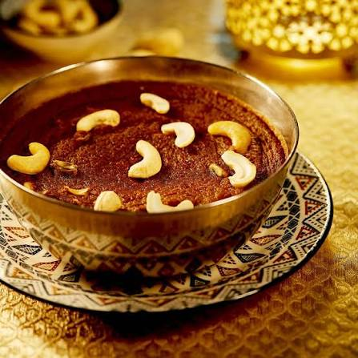
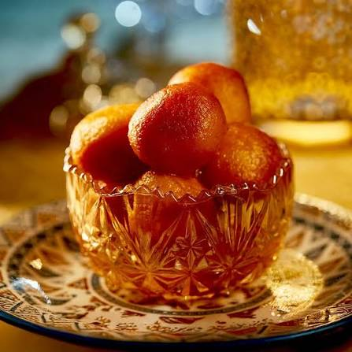
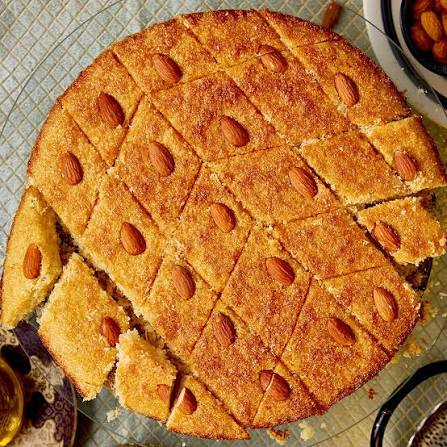

Sri Lankan Ramadan Recipes

Sri Lankan Watalappan
A traditional Sri Lankan steamed coconut custard dessert made with jaggery, eggs, coconut milk, and aromatic cardamom, commonly enjoyed during Ramadan and celebrations.
View Recipe
Gulab Jamun
Soft and delicious golden sweet balls made with milk powder and soaked in rose and cardamom flavoured sugar syrup.
View Recipe
Basbousa (Semolina Coconut Cake)
A soft and moist Middle Eastern semolina cake made with coconut, butter, and sweet flavours.
View Recipe
Vermicelli Fruit Custard
A creamy chilled dessert prepared with roasted vermicelli, milk, custard, and fresh fruits.
View Recipe
Rasmalai
A soft and creamy South Asian dessert made with cottage cheese dumplings soaked in sweet saffron and cardamom flavoured milk.
View Recipe